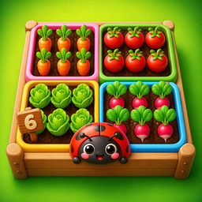

Privacy policy
Last updated: October 28, 2026
Plotlings (“the game”) is a logic puzzle game for Android published by ND Inovation Groupe (Paris, France) under its Artronic brand (“Artronic”, “we”). This policy explains what happens to your data when you play.
In short
Your progress stays on your device. Artronic collects no personal data such as your name, email or location, and has no server. The game shows no ads. It can measure anonymous usage statistics, but only if you accept when it asks. Optional in-game purchases, when they are offered, are handled entirely by Google Play.
Data stored on your device
To remember your game, Plotlings saves the following on your device only:
- the levels and grids you solved, your stars and times, your daily streak and streak freezes, your achievements, daily missions and gifts;
- your gardens: harvest coins, the decorations you bought and where you placed them, and the friends you met;
- the grid you are playing, so you can resume it;
- your profile (the player name you choose or the one drawn at random, and your figurine) and your weekly league (dewdrops, rank and past weeks). The other players of the league are simulated by the game on your device: your name and points are never sent anywhere;
- your watering cans and what you bought, if anything;
- your settings (language, sound, music, vibration, timer, grid markers, larger numbers, colour-blind patterns, larger text, reduced motion, reminder time, statistics choice).
This data never leaves your device. You can delete it at any time with Settings → Reset progress in the game, by clearing the app's data, or by uninstalling the game.
Data we collect
Artronic has no account system and no server of its own. The game does not access your contacts, location, camera, microphone or files, and it does not use the advertising ID. Artronic itself collects nothing. The only service that can receive data is the optional usage statistics below, which are off until you accept.
Anonymous usage statistics (optional)
After your first finished grid, the game asks whether we may measure anonymous usage statistics. If you say yes, the game uses Google Firebase Analytics to receive events such as: a level or grid started, finished or left, its size and difficulty, the time taken and the stars, hints asked for and shown, a daily grid started or finished and the length of your streak, the tutorial, a 3-minute rush, league points, a mission or a gift collected, a setting changed, a result shared, and basic technical information (app version, Android version, device model, country and language). Firebase links these events with a random identifier created for this installation of the game (not the advertising ID); it changes if you reinstall the game. No name, email or account is collected. The purpose is to see which levels are too hard and to improve the game. The data is processed by Google (see Google's Privacy Policy and Firebase's privacy information) and is kept in a project owned by Artronic. You can change your choice at any time with Settings → Anonymous statistics; turning it off stops the collection immediately. If you say no, nothing is sent.
Permissions
- Vibration: short vibrations when a plot reaches a seed, when it fits and when you win. You can turn them off in the game's settings.
- Notifications and alarms (optional): if you allow the daily reminder, the game schedules notifications on your device at the time you choose (the daily grid, and your streak when it is at risk). They are created and shown by your phone: no server is involved. You can turn them off in the game or in your phone's settings.
- Internet and network state: only to send the statistics if you accepted them, and for Google Play purchases; the game itself plays fully offline.
- Billing: lets Google Play handle the optional purchases described below.
Sharing your result
The Share button only opens your phone's share sheet with a short message you can edit (the level or daily grid number, stars, time, streak and the harvest as vegetable emojis); it never shows the solution. Nothing is sent unless you choose an app and send it yourself.
Purchases
The Shop can list optional purchases: “Premium packs” (one-time, unlocks the nine 7×7, 8×8 and 9×9 packs), packs of 10, 30 or 100 watering cans (consumable: cans are added to a stock kept on your device and used up as you ask for hints beyond the free ones) and “No ads” (one-time, only offered if ads are added in a future version). Until they are switched on, nothing can be bought. Payments are handled entirely by Google Play: Artronic never sees your payment details, name or card. The game only learns from Google Play whether a purchase was made, so it can unlock the content or add the cans, and it stores the result on your device. “Restore purchases” in the Shop asks Google Play again after a reinstall or on a new phone; used cans cannot be restored. See Google's Privacy Policy.
Advertising
Plotlings shows no ads and contains no advertising SDK. If ads are added in a future version, this policy will be updated first, on this page.
Children
The game is intended for players aged 13 and over and is not directed at children. Artronic does not knowingly collect any information from children.
Changes to this policy
If this policy changes, the new version will be published on this page with a new date.
Contact
For any question about this policy or your data: artronic.n@gmail.com.